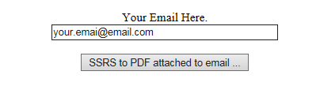
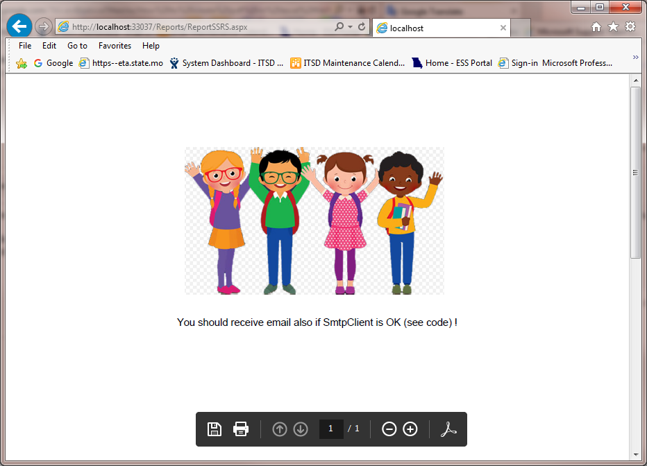

How to create pdf or excel file from “rdlc” SSRS report and download it and show on the same page.
How to attach this file to an email.
(without using intermediate place)
On the first page insert your real email and click on the button ...

Your SSRS rdlc report will be opened in the different window like a pdf file.
If you add to (see the code) -> "Dim mailClient As New SmtpClient("xxxx.YYYY.zzzz")" correct mail client you will receive an email with attached same file.
You also will see your report in a new window like a pdf file.
Here you can find code which shows how to download pdf or excel file from your rdlc report.

In Visual Studio Ultimate 2013:
To run the sample in the Visual Studio debugger, from the menu select Debug > Start Debugging. To run the sample in Visual Studio 2013 Ultimate without debugging, from the menu select Debug > Start Without Debugging.
To run the sample in the Visual Studio debugger, from the menu select Debug > Start Debugging. To run the sample in Visual Studio 2013 Ultimate without debugging, from the menu select Debug > Start Without Debugging.